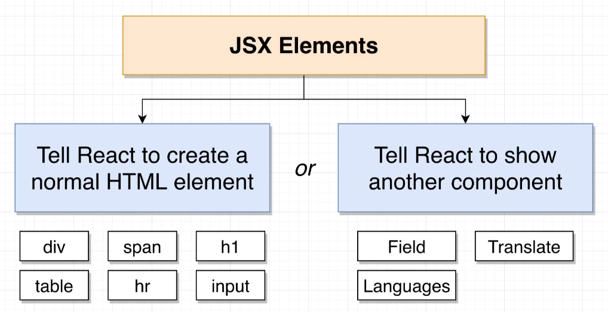
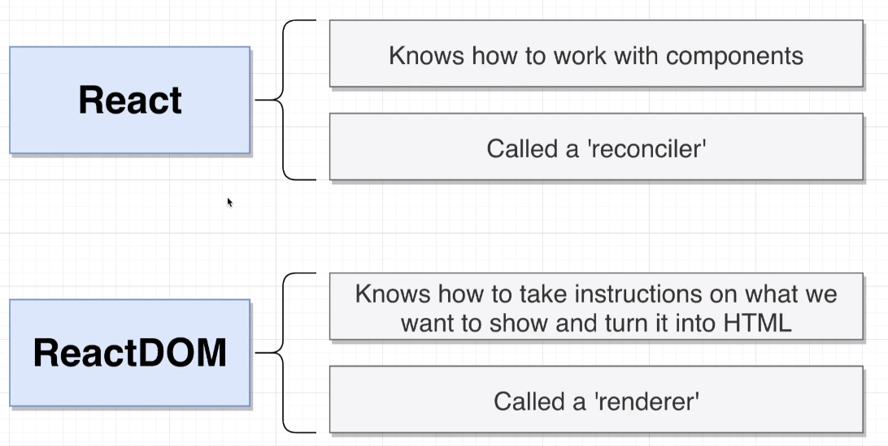

A Component is a plain JavaScript function that returns JSX.
Components in REACT have two jobs.
JSX is a set of instructions that tells React exactly what content to display on the screen at any given time.
It looks very similar to HTML.
React iterates over every JSX element. If it's a DOM element, it displays to the page.
If it's a React Component, the Component function is called and inspects the JSX it gets back.
Whenever you work with React, you're actually working with two separate libraries. React and ReactDOM.
The React Library has a bunch of code inside of it that knows how to get a bunch of different components to work together, how to call a component function, how to get back that JSX and how to iterate over all those elements and decide whether to create some kind of HTML element or whether to call some other component function.
This library is called a 'reconciler'.
Specialized library that knows how to take a set of instructions on different elements that we need to create and create HTML out of it.
It takes JSX and turns it into HTML and puts it into the DOM to display.
Because ReactDOM is responsible for rendering content or showing content to a user, we refer to it as a 'renderer'.
useState is a function that we make use of to work with a system in react called the State System.
The State Sytem manages data inside your application. Specifically, data that changes over time.
This system updates content on the screen.
.............
REACT code here